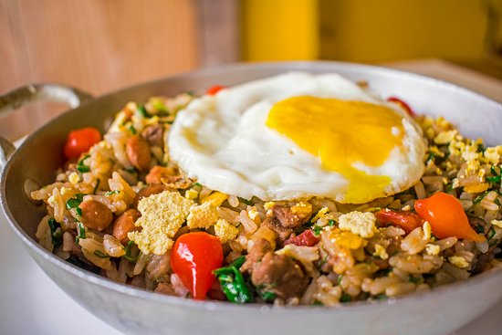

MEXIDINHO
Comida Brasileira
- Tempo de Preparo: 35 min
- Um prato brasileiro feito com ovos, farinha de mandioca e outros ingredientes, como carne, feijão, arroz, couve, queijo, bacon, linguiça, entre outros.
Prato simples e saboroso, pode ser acompanhado com arroz branco, banana e torresmo
